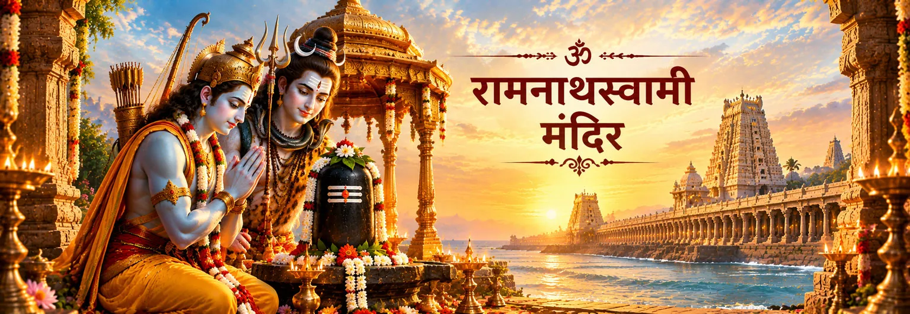

शिव के रूप में रामनाथस्वामी
मुख्य आराध्य देवता रामनाथस्वामी के रूप में भगवान शिव हैं। इसलिए मंदिर की मूल उपासना शैव है, जबकि इसकी पवित्र कथा इस तीर्थ को राम की यात्रा से भी जोड़ती है।

राम और शिव का पवित्र तीर्थ
तमिलनाडु के रामेश्वरम् में स्थित रामनाथस्वामी मंदिर राम–शिव परंपरा से जुड़े महान शिव तीर्थों में से एक है। यह मंदिर भगवान शिव को रामनाथस्वामी के रूप में समर्पित है और मंदिर की अपनी परंपरा राम, सीता, लक्ष्मण तथा हनुमान से इसका गहरा संबंध बताती है।
यह मंदिर परंपरागत शैव तीर्थयात्रा में पूजित बारह ज्योतिर्लिंगों में भी गिना जाता है। इसके विशाल गलियारे, अलंकृत स्तंभ, पवित्र तीर्थ-कूप और समुद्रतटीय वातावरण तीर्थयात्रा को एक विशिष्ट रूप देते हैं—भक्त स्थापत्य, जल, मंत्र और पवित्र स्मृति के बीच से होकर शिव के गर्भगृह की ओर बढ़ता है।
मंदिर की पवित्र पहचान
रामनाथस्वामी मंदिर देवता, पवित्र जल, तीर्थयात्रा, साहित्य और जीवित पूजा-परंपरा को एक साथ जोड़ता है।
मुख्य आराध्य देवता रामनाथस्वामी के रूप में भगवान शिव हैं। इसलिए मंदिर की मूल उपासना शैव है, जबकि इसकी पवित्र कथा इस तीर्थ को राम की यात्रा से भी जोड़ती है।
रामनाथस्वामी को परंपरागत रूप से बारह ज्योतिर्लिंग तीर्थों में गिना जाता है। भक्तों के लिए इससे रामेश्वरम् की यात्रा केवल रामकथा तक सीमित न रहकर व्यापक शैव तीर्थ-परंपरा से जुड़ जाती है।
मंदिर परिसर अपने पवित्र तीर्थ-कूपों के लिए प्रसिद्ध है। भारत सरकार के पर्यटन स्रोत में मंदिर के भीतर 22 तीर्थों का उल्लेख है, जिससे स्नान और शुद्धि की परंपरा तीर्थयात्रा का महत्वपूर्ण अंग बनती है।
मंदिर अपने विशाल गलियारों और अलंकृत स्तंभों के लिए प्रसिद्ध है। ये स्थान केवल सजावटी नहीं हैं; वे तीर्थयात्रा की गति को भी आकार देते हैं और भक्त को धीरे-धीरे एक पवित्र स्थापत्य-जगत से आगे ले जाते हैं।
राम, हनुमान और दो शिवलिंग
मंदिर की अपनी पवित्र परंपरा राम, सीता और हनुमान से जुड़ी एक प्रसिद्ध कथा को सुरक्षित रखती है।
मंदिर-परंपरा के अनुसार राम सीता और लक्ष्मण के साथ यहाँ आए और शिवलिंग की स्थापना कर पूजा की। इस पूजा को रावण-वध के बाद शुद्धि की राम की भावना से भी जोड़ा जाता है।
मंदिर के आधिकारिक इतिहास में मुख्य रामलिंग की परंपरा उस शिवलिंग से जोड़ी जाती है जिसे शुभ समय निकट आने पर रेत से तैयार किया गया था। इसे मंदिर-परंपरा के रूप में समझना उचित है; इसे प्रत्येक रामायण ग्रंथ में समान रूप से वर्णित मानना आवश्यक नहीं है।
मंदिर की परंपरा के अनुसार हनुमान को कैलास से शिवलिंग लाने भेजा गया, पर वे पूजा के निर्धारित समय के बाद लौटे। कथा में कहा गया है कि राम ने उनके लाए लिंग को रामलिंग के पास स्थापित कराया और उसके प्रथम पूजन की व्यवस्था की।
इस कथा का महत्व केवल इसकी सुंदरता में नहीं है। मंदिर के आधिकारिक इतिहास में कहा गया है कि हनुमान द्वारा लाए गए विश्वनाथ लिंग की प्रतिदिन प्रथम पूजा होती है। इस प्रकार एक पवित्र कथा जीवित पूजा-परंपरा में आगे बढ़ती रहती है।
भक्त की आंतरिक यात्रा
राम–शिव कथा एक महान नायक को भी उपासक के रूप में दिखाती है। भक्त के लिए यह स्मरण है कि भक्ति आध्यात्मिक श्रेष्ठता सिद्ध करने से नहीं, बल्कि ग्रहणशील और विनम्र बनने से आरंभ होती है।
तीर्थ-कूपों की परंपरा तीर्थयात्रा को स्नान, चलने, प्रार्थना और मंदिर में प्रवेश की लय देती है। प्रतीकात्मक रूप से भी यह क्रम भक्त को जल्दबाजी छोड़कर अधिक सजग बनने में सहायता कर सकता है।
रामेश्वरम् भारत के तीर्थ-मानचित्र में राम–शिव संबंध को एक भौतिक स्थान देता है। भक्त शिव की पूजा करते हुए राम की शिव-भक्ति का स्मरण कर सकता है और दोनों नामों को एक-दूसरे की भक्ति को गहरा करने दे सकता है।
एक परिपक्व तीर्थयात्रा भक्ति और ग्रंथ-जागरूकता दोनों को साथ रख सकती है। मंदिर-परंपरा, पौराणिक आख्यान और अलग-अलग रामायण ग्रंथों की अपनी-अपनी ऐतिहासिक परतें हैं। इन भिन्नताओं का सम्मान भक्ति को कमजोर नहीं करता; इससे समझ आता है कि सदियों में पवित्र स्मृति कैसे विकसित हुई।
परंपरा और ग्रंथ
रामनाथस्वामी की परंपरा अनेक परतों वाली है। मंदिर का आधिकारिक इतिहास राम, सीता, लक्ष्मण और हनुमान से जुड़ी कथा को सुरक्षित रखता है, जबकि व्यापक रामेश्वरम् तीर्थ में पवित्र कूप, समुद्रतटीय तीर्थ और मंदिर-निर्माण तथा संरक्षण का लंबा इतिहास शामिल है। भारत सरकार का पर्यटन-स्रोत भी इसे शिव मंदिर, ज्योतिर्लिंग तीर्थ और राम से गहराई से जुड़े पवित्र स्थान के रूप में प्रस्तुत करता है।
यह अंतर महत्वपूर्ण है। भक्त मंदिर की पवित्र स्मृति को श्रद्धा से स्वीकार करते हुए यह भी समझ सकता है कि मंदिर-परंपरा अपने आप प्रत्येक रामायण आख्यान के सबसे प्राचीन रूप के समान नहीं होती। रामेश्वरम् तब और समृद्ध दिखाई देता है जब इसकी धर्म-दृष्टि, साहित्य, स्थापत्य और जीवित पूजा—सभी को साथ देखा जाए।
भक्त के लिए
रामनाथस्वामी मंदिर की आध्यात्मिक शक्ति अनेक पवित्र स्मृतियों के संगम में दिखाई देती है—राम की शिव-भक्ति, हनुमान की उपस्थिति, तीर्थों की पवित्रता, मंदिर का वैभव और निरंतर चलती पूजा। यहाँ भक्त को राम और शिव में से किसी एक को चुनने की आवश्यकता नहीं; परंपरा हृदय को दोनों का श्रद्धापूर्वक स्मरण करने के लिए आमंत्रित करती है।
भक्तों के सामान्य प्रश्न
हाँ। यहाँ के आराध्य देवता रामनाथस्वामी के रूप में भगवान शिव हैं। राम से जुड़ी परंपरा मंदिर की महत्वपूर्ण पवित्र परत है, लेकिन मुख्य देवता और पूजा-परंपरा शैव है।
मंदिर के आधिकारिक इतिहास में यह परंपरा सुरक्षित है कि राम ने सीता और लक्ष्मण के साथ इस पवित्र स्थान पर शिवलिंग की स्थापना कर पूजा की। यह कथा मंदिर की भक्तिपरक पहचान का महत्वपूर्ण हिस्सा है।
मंदिर-परंपरा रामलिंग को राम की पूजा के लिए तैयार किए गए लिंग से और विश्वलिंग को हनुमान द्वारा लाए गए लिंग से जोड़ती है। मंदिर के आधिकारिक इतिहास के अनुसार हनुमान द्वारा लाए गए विश्वनाथ लिंग की प्रतिदिन प्रथम पूजा होती है।
तीर्थ-कूप रामेश्वरम् की तीर्थयात्रा की पूजा-परंपरा का महत्वपूर्ण हिस्सा हैं। भारत सरकार के पर्यटन-स्रोत में मंदिर के भीतर 22 पवित्र जलस्थलों का उल्लेख है, जबकि व्यापक रामेश्वरम् परंपरा में अन्य पवित्र स्नान-स्थल भी शामिल हैं।